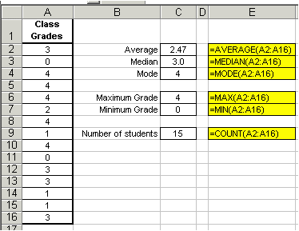
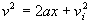
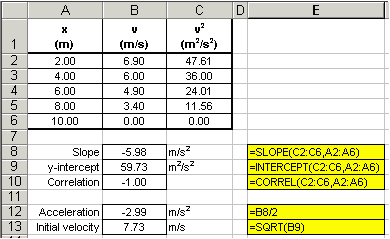
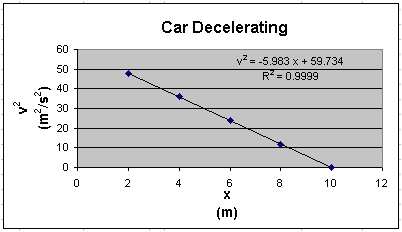
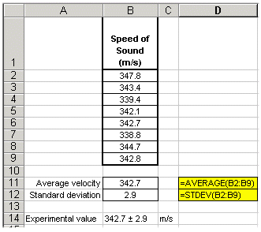
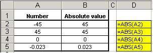

|
Physics Laboratory |
Excel Tutorial #10 |
|
9. Advanced Topics E |
Statistics |
11. Linear Regression F |
Excel has a wide variety of built-in statistics functions that give, for instance, the slope and y-intercept of a line, the standard deviation of a data sample, and the mean, median and mode of a set of values. In this tutorial we will cover a few of the more useful and popular statistics functions, but there are many more built-in statistics functions that you can learn about via Excel's help files.
Basic built-in functions. (AVERAGE, MEAN, MODE, COUNT, MAX, MIN)
We will use the familiar example of a class's grades to illustrate the use of some of the more basic Excel functions, like AVERAGE( ), MODE( ) AND MAX( ). Assume a class's grade distribution is as follows: 3, 0, 4, 4, 4, 2, 4, 1, 4, 0, 3, 3, 1, 1, 3. These grades are based on a 4-point scale with 4=A and 0=F and are entered into an Excel worksheet shown below. Using the AVERAGE( ) function, we find the class's average (or arithmetic mean) grade is a disappointing 2.47, or a mid-C. The syntax for this common function is =AVERAGE(number1, number2, ...) and is displayed in the screen shot below. For more information using the AVERAGE function, see the arithmetic section in this tutorial.
However we don't get a clear picture of the class's performance by simply looking at its average. We can further analyze the data using the MEDIAN( ) function. The median gives the middle number in a set of numbers and its syntax is =MEDIAN(number1, number2,...). We see from the screen shot below that the median grade is 3.0, meaning that half of the grades are higher than 3.0, and half are lower. Therefore, despite the low class average, more students scored 3's and 4's than 2's, 1's and 0's.
Additionally, we can also analyze the grade distribution by using the MODE( ) function. The mode gives the most frequently occurring value of a set of numbers and its syntax is =MODE(number1, number2,...). From the screen shot, we see that the mode grade is 4, meaning that a score of 4 was the most common grade. Again, the instructor of the class can take heart that, despite the low class average, more students made A's than any other grade.
Without going into too much detail, we can also use some of Excel's built-in functions to determine the number of grades entered, and the maximum and minimum grades of the distribution. The syntax for these functions are shown below in the bulletted list and also in the screen shot.
- The COUNT( ) function gives the number of cells that contain numbers. Its syntax is =COUNT(value1, value2, ...).
- The MAX( ) function returns the largest value in a set of numbers. Its syntax is =MAX(number1, number2, ...).
- The MIN( ) function returns the smallest value in a set of numbers. Its syntax is =MIN(number1, number2, ...).

Linear regression equations. (SLOPE, INTERCEPT, CORREL)
Excel has three built-in functions that allow for a third method for determining the slope, y-intercept, correlation coefficient, and R-squared values of a set of data. The functions are SLOPE(), INTERCEPT(), CORREL() and RSQ(), and are also covered in the statistics section of this tutorial.
The syntax for each are as follows:
- Slope, m: =SLOPE(known_y's, known_x's)
- y-intercept, b: =INTERCEPT(known_y's, known_x's)
- Correlation Coefficient, r: =CORREL(known_y's, known_x's)
- R-squared, r2: =RSQ(known_y's, known_x's)
I use these functions for two reasons. One, using them is easier and faster than plotting the data and adding a trendline -- although a visual graph shows trends in the data better than any other tool. And, two, it is often necessary to operate on the slope and y-intercept, and using the SLOPE( ) and INTERCEPT( ) functions allows the scientist to automate this, rather than manually transcribing the values given by the graph.
As an example, let's examine the equation of motion,

, for a car coming to a stop. If we measure the car's position and velocity we can determine its acceleration and its initial velocity with the use of the SLOPE( ) and INTERCEPT( ) functions. The equation of motion has the form of ,
so if the square of the car's velocity is plotted
along the y-axis and its position
along the x-axis, then the slope is
,
and the y-intercept is simply
.
,
so if the square of the car's velocity is plotted
along the y-axis and its position
along the x-axis, then the slope is
,
and the y-intercept is simply
.
Note that in order to find the acceleration, we must divide the slope by 2 and to find the initial velocity, we must take the square root of the y-intercept.

Note that the CORREL( ) function was used to ensure that the data did display a linear trend -- otherwise, the slope and y-intercept values are meaningless! It is always a good idea to plot the data as well as use these statistics functions because sometimes trends are not obvious. Additionally, a plot of the data allows us to visualize the data and gross blunders and errant data points are easily detected. The graph below tells us immediately that our data appears reasonable.

You must always convince yourself of what the data is telling you.
Error analysis tools. (STDEV)
Let's assume we make a number of repetitive measurements of one quantity, say the speed of sound. We could find the average value, but this tells us nothing of the precision of our measurement. For this, we need to calculate the standard deviation of the measured values. To quickly determine the standard deviation of any measurement, use Excel's built-in STDEV( ) function. This is illustrated in the following example:

It should be noted here that to find the accuracy of the experimental value, you will need to determine its percent error from the accepted value of 343.0m/s.
Miscellany. (ABS)
To find the absolute value of a number, use the ABS( ) function. See the examples below.

See the complete list of Excel's
built-in statistics functions and their descriptions.
If you have a question or comment, send an e-mail to
.
|
9. Advanced Topics E |

|
11. Linear Regression F |
Copyright © 2000, Clemson University. All Rights Reserved.
This page was created by
.